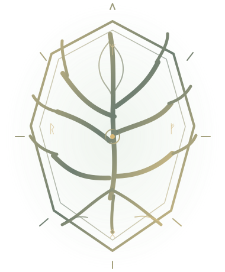

ᛟ · N I N E R E A L M S · ᛟv0.01 · FOUNDATION

A SAGA BENEATH THE ROOTS
RUNEGRAVE
THE NINEFOLD DESCENT
Yggdrasil is dying.
Every lost soul must descend.
FIRST FORGING · NOT YET PLAYABLE
Technical foundations only. The separate Norse handheld grips and central combat display begin at v0.02.